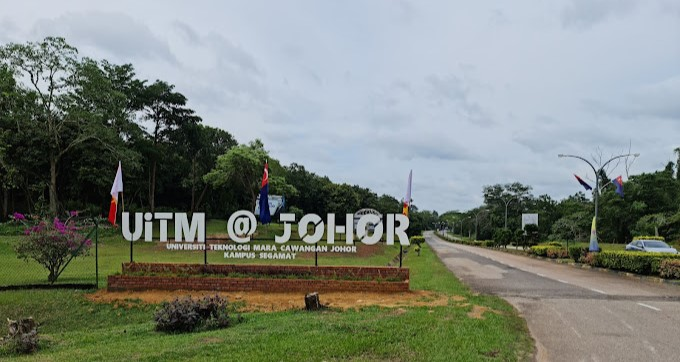

MY EDUCATION
My University Experience
My university journey, spanning from the age of 18 to 21, has been a period of immense growth and achievement. I pursued a diploma in Information Management, which equipped me with the knowledge and skills needed for a career in the information field.
Additional Curriculum - Plus Tahfiz Program
I took part in the Plus Tahfiz Program as an additional curriculum, deepening my understanding and memorization of the Quran alongside my regular studies.
Best Male Student AwardDuring semester 1, I received the Best Male Student Award of Alpha Company, an honor that recognized my dedication and achievements.
Current Semester Final ExamIn my current semester, I achieved a GPA of 3.61 in my final exams, a testament to my hard work and commitment to academic excellence.